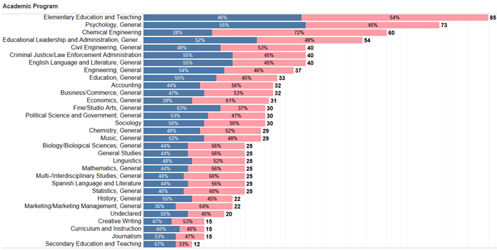

- The Waterford School- Graduated in 2022
- University of Utah: Attended September 2022-April 2024-Apart of the Honors College- Accounting major and Music Minor
- Brigham Young University: April 2024-present- Accounting Student and Music Minor
- Musician: plays the violin, piano, and organ
- Athelete: Plays golf and skies
- IS skills: Database Design Development; VBA; SQL; HTML, Css, Bootstrap; Flow Chart Diagramming
- Consecutively on the Dean's List- University of Utah
- 5th in State for Women's golf Senior year of High School- The Waterford School
- Eccles School Academic Scholarship and Merit Scholarship- University of Utah
- Roxberry Smoothie Co: June 2020-August 2020
- Summer camp counselor at the Waterford School: June-August 2022
- Seasonal Sales Associate at Athelta: November 2022-January 2023
- BCOR 1010 Teaching Assistant: August 2023-May 2024
- The VITA Program: December 2023-April 2024
- The Vice President of Training
- Site Coordinator

Here is a picture of me!

This is a tableau graph shows the gender distrubition list about professions. According to this graph, there are more females in the accounting professions than males.